<!DOCTYPE html>
<html lang="zh-CN">
<head><meta name="generator" content="Hexo 3.8.0">
  <!-- hexo-inject:begin --><!-- hexo-inject:end --><meta charset="utf-8">
  
  <title>最大熵马尔可夫模型（MEMM）及其三个基本问题 | Sm1les&#39;s blog</title>
  <meta name="viewport" content="width=device-width, initial-scale=1, maximum-scale=1">
  <meta name="description" content="最大熵马尔可夫模型的定义最大熵马尔可夫模型（Maximum-entropy Markov model，MEMM）由Andrew McCallum，Dayne Freitag和Fernando Pereira三人于2000年提出[1]。它结合了隐马尔可夫模型（HMM）和最大熵模型（MEM），被广泛应用于处理序列标注问题。文献[1]认为在HMM中主要存在以下两个问题：  无法用特征对观测序列参数化：在">
<meta name="keywords" content="最大熵马尔可夫模型,MEMM">
<meta property="og:type" content="article">
<meta property="og:title" content="最大熵马尔可夫模型（MEMM）及其三个基本问题">
<meta property="og:url" content="http://sm1les.com/2019/07/26/maximum-entropy-markov-model/index.html">
<meta property="og:site_name" content="Sm1les&#39;s blog">
<meta property="og:description" content="最大熵马尔可夫模型的定义最大熵马尔可夫模型（Maximum-entropy Markov model，MEMM）由Andrew McCallum，Dayne Freitag和Fernando Pereira三人于2000年提出[1]。它结合了隐马尔可夫模型（HMM）和最大熵模型（MEM），被广泛应用于处理序列标注问题。文献[1]认为在HMM中主要存在以下两个问题：  无法用特征对观测序列参数化：在">
<meta property="og:locale" content="zh-CN">
<meta property="og:image" content="http://sm1les.com/2019/07/26/maximum-entropy-markov-model/memm.svg">
<meta property="og:image" content="http://sm1les.com/2019/07/26/maximum-entropy-markov-model/labelbias.svg">
<meta property="og:updated_time" content="2019-10-21T15:20:37.313Z">
<meta name="twitter:card" content="summary">
<meta name="twitter:title" content="最大熵马尔可夫模型（MEMM）及其三个基本问题">
<meta name="twitter:description" content="最大熵马尔可夫模型的定义最大熵马尔可夫模型（Maximum-entropy Markov model，MEMM）由Andrew McCallum，Dayne Freitag和Fernando Pereira三人于2000年提出[1]。它结合了隐马尔可夫模型（HMM）和最大熵模型（MEM），被广泛应用于处理序列标注问题。文献[1]认为在HMM中主要存在以下两个问题：  无法用特征对观测序列参数化：在">
<meta name="twitter:image" content="http://sm1les.com/2019/07/26/maximum-entropy-markov-model/memm.svg">
  
  
    <link rel="icon" href="/favicon.ico">
  
  <link rel="stylesheet" href="/css/typing.css">
  <link rel="stylesheet" href="/css/donate.css">
  
  
  <link rel="stylesheet" href="https://cdn.jsdelivr.net/npm/disqusjs@1.1/dist/disqusjs.css"><!-- hexo-inject:begin --><!-- hexo-inject:end -->
  
</head>
</html>
  
    
      <body>
    
  
      <!-- hexo-inject:begin --><!-- hexo-inject:end --><div id="container" class="container">
        <article id="post-maximum-entropy-markov-model" class="article article-type-post" itemscope itemprop="blogPost">
  <header id="header" class="header">
  <nav class="mobile-nav">
    <h1 class="nickname">:)s</h1>
    <ul class="mobile-nav-menu">
      <label for="mobile-menu-toggle"><a>&#9776; Menu</a></label>
      <input type="checkbox" id="mobile-menu-toggle">
      <ul class="mobile-nav-link">
        
        <a href="/">Home</a>
        
        <a href="/archives">Archives</a>
        
        <a href="/about">About</a>
        
      </ul>
    </ul>
  </nav>
	
		<nav id="main-nav" class="main-nav nav-left">
	
	
	  <a class="main-nav-link" href="/">Home</a>
	
	  <a class="main-nav-link" href="/archives">Archives</a>
	
	  <a class="main-nav-link" href="/about">About</a>
	
  </nav>
</header>

  <hr>
  <div class="article-inner">
    

    
      <header class="article-header">
        
  
    <h1 class="article-title" itemprop="name">
      最大熵马尔可夫模型（MEMM）及其三个基本问题
    </h1>
  

      </header>
    
    <div class="article-entry typo" itemprop="articleBody">
      
        <h3 id="最大熵马尔可夫模型的定义"><a href="#最大熵马尔可夫模型的定义" class="headerlink" title="最大熵马尔可夫模型的定义"></a>最大熵马尔可夫模型的定义</h3><p>最大熵马尔可夫模型（Maximum-entropy Markov model，MEMM）由Andrew McCallum，Dayne Freitag和Fernando Pereira三人于2000年提出<sup><a href="#ref1">[1]</a></sup>。它结合了隐马尔可夫模型（HMM）和最大熵模型（MEM），被广泛应用于处理序列标注问题。文献<a href="#ref1">[1]</a>认为在HMM中主要存在以下两个问题：</p>
<ul>
<li>无法用特征对观测序列参数化：在很多序列标注任务中，尤其当不能枚举所有观测序列时，通常需要用大量的特征来刻画观测序列。比如在文本中识别一个未见过的公司名字时，通常需要用到很多特征信息，如大写字母、结尾词、词性、格式、在文本中的位置等；</li>
<li>判别式模型比生成式模型更适合处理序列标注问题：HMM多被用在处理序列标注问题，序列标注问题的目标是求出状态相对于观测的条件概率$P(state|observation)$，而HMM是对状态和观测的联合概率$P(state,observation)$进行建模的生成式模型，相对于直接对$P(state|observation)$进行建模的判别式模型来说，显然判别式模型更适合处理序列标注问题。</li>
</ul>
<p>为了解决以上两个问题，MEMM在HMM的基础上做了如下改进：</p>
<ul>
<li>采用判别式模型：不对状态和观测的联合概率$P(state,observation)$进行建模，而是直接对状态相对于观测的条件概率$P(state|observation)$进行建模；</li>
<li>采用最大熵模型进行建模：对当前时刻的状态取值的概率用最大熵模型进行建模，因此能够实现用特征对观测序列参数化；</li>
</ul>
<p>MEMM的具体定义如下：</p>
<p><center>

</center><br>设$V$是所有可能的观测的集合，$Q$是所有可能的状态的集合：</p>
<script type="math/tex; mode=display">V=\{v_1,v_2,...,v_M\},Q=\{q_1,q_2,...,q_N\}</script><p>其中，$N$是可能的状态数，$M$是可能的观测数。<br>$O$是长度为$T$的观测序列，$I$是对应的状态序列：</p>
<script type="math/tex; mode=display">O=(o_1,o_2,...,o_T),I=(i_1,i_2,...,i_T)</script><p>在已知观测序列$O$的条件下，状态序列为$I$的概率为</p>
<script type="math/tex; mode=display">\begin{aligned}
P(I|O)&=P(i_1,i_2,...,i_T|O)\\
&=P(i_1|O)\prod_{t=2}^TP(i_t|i_{t-1},O)\\
&=P(i_1|O)\prod_{t=2}^T\cfrac{\exp\left(\sum_{k=1}^K w_kf_k(i_t,i_{t-1},O)\right)}{\sum\limits_{i_t}\exp\left(\sum_{k=1}^K w_kf_k(i_t,i_{t-1},O)\right)}\\
&=P(i_1|O)\prod_{t=2}^T\cfrac{1}{Z(i_{t-1},O)}\exp\left(\sum_{k=1}^K w_kf_k(i_t,i_{t-1},O)\right)\\
\end{aligned}</script><p>其中，$Z(i_{t-1},O)=\sum\limits_{i_t}\exp\left(\sum_{k=1}^K w_kf_k(i_t,i_{t-1},O)\right),f_k(i_t,i_{t-1},O),w_k$分别对应于最大熵模型中的归一化因子，特征函数和特征函数的权重。若在$i_1$前添加一个恒为常量0的状态$i_0=0$，则上式可化简为</p>
<script type="math/tex; mode=display">\begin{aligned}
P(I|O)&=P(i_0=0,i_1,i_2,...,i_T|O)\\
&=\prod_{t=1}^TP(i_t|i_{t-1},O)\\
&=\prod_{t=1}^T\cfrac{1}{Z(i_{t-1},O)}\exp\left(\sum_{k=1}^K w_kf_k(i_t,i_{t-1},O)\right)\\
\end{aligned}</script><h3 id="最大熵马尔可夫模型的三个基本问题"><a href="#最大熵马尔可夫模型的三个基本问题" class="headerlink" title="最大熵马尔可夫模型的三个基本问题"></a>最大熵马尔可夫模型的三个基本问题</h3><ol>
<li>概率计算问题：在给定模型参数$w_k(k=1,2,…,K)$、观测序列$O=(o_1,o_2,…,o_T)$和状态序列$I=(i_1,i_2,…,i_T)$的条件下，计算条件概率$P(I|O)$；</li>
<li>学习问题：在给定观测序列$O=(o_1,o_2,…,o_T)$和状态序列$I=(i_1,i_2,…,i_T)$的条件下，估计模型参数$w_k(k=1,2,…,K)$，使得条件概率$P(I|O)$达到最大；</li>
<li>预测问题：也称为解码问题，已知模型参数$w_k(k=1,2,…,K)$和观测序列$O=(o_1,o_2,…,o_T)$，求条件概率$P(I\vert O)$达到最大的状态序列$I=(i_1,i_2,…,i_T)$，即给定观测序列，求最有可能的对应状态序列。</li>
</ol>
<h3 id="概率计算问题"><a href="#概率计算问题" class="headerlink" title="概率计算问题"></a>概率计算问题</h3><p>由于MEMM属于判别式模型，而对于判别式模型来说，给定了模型参数$w_k(k=1,2,…,K)$和观测序列$O=(o_1,o_2,…,o_T)$，直接套用模型的定义即可计算出条件概率$P(I|O)$。</p>
<h3 id="学习问题"><a href="#学习问题" class="headerlink" title="学习问题"></a>学习问题</h3><ul>
<li>既有观测序列$O=(o_1,o_2,…,o_T)$也有状态序列$I=(i_1,i_2,…,i_T)$时：此时MEMM类似于最大熵模型，所以能用于估计最大熵模型参数的策略和算法均可用于MEMM；</li>
<li>只有观测序列$O=(o_1,o_2,…,o_T)$而没有状态序列$I=(i_1,i_2,…,i_T)$时：此时MEMM是一个含有隐变量的模型，对于含有隐变量的模型，则可以使用EM算法对其进行参数估计。</li>
</ul>
<h3 id="预测问题"><a href="#预测问题" class="headerlink" title="预测问题"></a>预测问题</h3><p>HMM中用于解决预测问题的维特比（Viterbi）算法在MEMM中同样适用，具体算法如下：<br>定义在时刻$t$状态为$q_i$的所有单个路径$(i_1,i_2,…,i_t)$中概率最大值为</p>
<script type="math/tex; mode=display">\delta_t(i)=\max\limits_{i_1,i_2,..,i_{t-1}}P(i_1,...,i_{t-1},i_t=q_i|O),\quad i=1,2,...,N</script><p>由此定义可推得</p>
<script type="math/tex; mode=display">\begin{aligned}
\delta_1(i)&=P(i_1=q_i|i_0=0,O) \\
\delta_2(i)&=\max\limits_{1\leq j\leq N}[\delta_1(j)\cdot P(i_2=q_i|i_1=q_j,O)] \\
\delta_3(i)&=\max\limits_{1\leq j\leq N}[\delta_2(j)\cdot P(i_3=q_i|i_2=q_j,O)] \\
\end{aligned}</script><p>依次此类推可得如下递推公式</p>
<script type="math/tex; mode=display">\delta_{t}(i)=\max\limits_{1\leq j\leq N}[\delta_{t-1}(j)\cdot P(i_t=q_i|i_{t-1}=q_j,O)]</script><p>同样再定义在时刻$t$状态为$q_i$的所有单个路径$(i_1,i_2,…,i_t)$中概率最大的路径的第$t-1$个结点为</p>
<script type="math/tex; mode=display">\psi_t(i)=\arg\max\limits_{1\leq j\leq N}[\delta_{t-1}(j)\cdot P(i_t=q_i|i_{t-1}=q_j,O)]</script><p>因此，取$i_T^*=\arg\max\limits_{i}[\delta_T(i)]$，则$i_{T-1}^*=\psi_T(i_T^*),i_{T-2}^*=\psi_{T-1}(i_{T-1}^*),…,i_1^*=\psi_2(i_2^*)$。由于MEMM模型本身的问题，用维特比算法求出来的最优序列$I^*=(i_1^*,i_2^*,…,i_T^*)$<strong>并不是真正意义上的最优状态序列</strong>，下面举例说明：<br>假设已知的观测序列为$O=(o_1,o_2,o_3,o_4)$，所有可能的状态的集合为$Q=\{1,2,3,4,5\}$，各个时刻之间的状态转移概率如下图所示</p>
<p><center>

</center><br>由维特比算法易算得最优状态序列$I^*=(1,1,1,1)$，但是结合解码问题的实际情形可知，显然状态序列$\tilde{I}=(1,2,2,2)$相对来说比$I^*$更加合理，因为$\tilde{I}$每个时刻之间的状态转移都比$I^*$更加<strong>自信</strong>，例如从时刻1到时刻2，$I^*$是选择转移到自己最不自信的下一个状态（0.4 &lt; 0.6），而$\tilde{I}$则是选择转移到自己最自信的那个状态（0.6 &gt; 0.4），同理可知，在时刻2到时刻3和时刻3到时刻4时都是同样的情形。因此，$I^*$一定不是真正意义上的最优状态序列，此即为MEMM的<strong>标注偏置问题（The Label Bias Problem）</strong><sup><a href="#ref2">[2]</a></sup>。导致标注偏置的主要原因是MEMM对各个时刻的状态取值的概率$P(i_t|i_{t-1},o_t)$进行了局部归一化，也即</p>
<script type="math/tex; mode=display">\begin{aligned}
\sum_{i_t}P(i_t|i_{t-1},O)&=\sum_{i_t}\cfrac{1}{Z(i_{t-1},O)}\exp\left(\sum_{k=1}^K w_kf_k(i_t,i_{t-1},O)\right) \\
&=\sum_{i_t}\cfrac{1}{\sum\limits_{i_t}\exp\left(\sum_{k=1}^K w_kf_k(i_t,i_{t-1},O)\right)}\exp\left(\sum_{k=1}^K w_kf_k(i_t,i_{t-1},O)\right) \\
&=1
\end{aligned}</script><p>所以对于那些可转移状态少的状态来说，它转移到下一个状态的概率通常都会比那些可转移状态多的状态转到下一个状态的概率要高。比如上图中的状态1可以转移到状态1/2，状态2可以转移到状态1/2/3/4/5，那么状态1可转移的状态就比状态2可转移的状态要少，所以从状态1转移到状态1/2的单个概率通常都会比从状态2转移到状态1/2/3/4/5的单个概率要高。显然这是不符合实际情形的，因为我们并不要求每个状态的可转移状态个数相等，所以对于每个状态来说，只要它们是以同等自信程度转移到下一个状态，那么它们的转移概率就应该相等。比如上图中的时刻3到时刻4时，状态1转移到状态1/2的自信程度相等（0.5=0.5），同样状态2转移到状态1/2/3/4/5的自信程度也相等（0.2=0.2=0.2=0.2=0.2），那么它们的转移概率理应都是相等的，显然进行局部归一化后它们的转移概率是不相等的，所以只需取消局部归一化或者换成全局归一化即可解决标注偏置问题。</p>
<h3 id="参考文献"><a href="#参考文献" class="headerlink" title="参考文献"></a>参考文献</h3><p><span id="ref1">[1] Mccallum A, Freitag D, Pereira F. Maximum Entropy Markov Models for Information Extraction and Segmentation[J]. Icml, 2000.</span><br><span id="ref2">[2] Lafferty J, Mccallum A, Pereira F C N. Conditional Random Fields: Probabilistic Models for Segmenting and Labeling Sequence Data[J]. Proceedings of Icml, 2001.</span></p>

      
      
    </div>
    <footer class="article-footer">
      <ul class="article-meta">
        <li>
          <span class="label">本文作者：Sm1les</span>
        </li>
        <li>
          <span class="label">本文链接：<a href="http://sm1les.com/2019/07/26/maximum-entropy-markov-model/">http://sm1les.com/2019/07/26/maximum-entropy-markov-model/</a></span>
        </li>
        <li>
          <span class="label">版权声明：本作品采用<a rel="license" href="http://creativecommons.org/licenses/by-nc-nd/3.0/">CC BY-NC-ND 3.0 许可协议</a>进行许可，转载请注明出处！</span>
        </li>
        <li>
          <span class="label">发布日期:</span>
          <a href="/2019/07/26/maximum-entropy-markov-model/" class="article-date">
  <time datetime="2019-07-26T13:42:34.000Z" itemprop="datePublished">2019-07-26</time>
</a>

        </li>
        <li>
          <span class="label">更新日期:</span>
          <a href="/2019/07/26/maximum-entropy-markov-model/" class="article-date">
  <time datetime="2019-10-21T15:20:37.313Z" itemprop="dateUpdated">2019-10-21</time>
</a>

        </li>
        
          <li>
            <span class="label">分类:</span>
            
  <div class="article-category">
    <a class="article-category-link" href="/categories/机器学习/">机器学习</a>
  </div>


          </li>
        
        
          <li>
            <span class="label">标签:</span>
            
  <ul class="article-tag-list"><li class="article-tag-list-item"><a class="article-tag-list-link" href="/tags/MEMM/">MEMM</a></li><li class="article-tag-list-item"><a class="article-tag-list-link" href="/tags/最大熵马尔可夫模型/">最大熵马尔可夫模型</a></li></ul>


          </li>
        
        <hr>
      </ul>
    </footer>
  </div>
  
    
<nav id="article-nav" class="article-nav">
  
    <a href="/2019/08/27/conditional-random-fields/" id="article-nav-newer" class="article-nav-link-wrap newer">
      <strong class="article-nav-caption">Newer</strong>
      <div class="article-nav-title">
        
          条件随机场（CRF）及其三个基本问题
        
      </div>
    </a>
  
  
    <a href="/2019/04/10/hidden-markov-model/" id="article-nav-older" class="article-nav-link-wrap older">
      <strong class="article-nav-caption">Older</strong>
      <div class="article-nav-title">隐马尔可夫模型（HMM）及其三个基本问题</div>
    </a>
  
</nav>


  
</article>


  <section id="comments" class="comments">
    <div id="disqus_thread"></div>
  </section>


      </div>
      
    <footer id="footer" class="post-footer footer">
      
      <hr>
      <div id="footerContent" class="footer-content">
        <p>© 2019 <strong>Sm1les</strong> Powered by <strong>Hexo</strong> Theme © <strong>GeekPlux</strong></p>


      </div>
    </footer>

      


<script src="https://cdn.jsdelivr.net/npm/disqusjs@1.1/dist/disqus.js"></script>
<script>
  var dsqjs = new DisqusJS({
      shortname: 'sm1les',
      siteName: 'sm1les',
      api: 'https://disqus.skk.moe/disqus/',
      apikey: 'NpJpGPceHYYAG6eEwrFFG6HE7SvnS5xaupPIG6CSTE67oyuOmQPTiFHMLtj3KkxO',
      admin: 'sm1lex,',
      adminLabel: 'Loading...'
  });
  </script>


<script src="https://cdn.jsdelivr.net/npm/jquery@3/dist/jquery.min.js"></script>
<script src="https://cdn.jsdelivr.net/npm/clipboard@2/dist/clipboard.min.js"></script>


  <link rel="stylesheet" href="https://cdn.jsdelivr.net/npm/@fancyapps/fancybox@3/dist/jquery.fancybox.min.css">
  <script src="https://cdn.jsdelivr.net/npm/@fancyapps/fancybox@3/dist/jquery.fancybox.min.js"></script>


<script src="/js/typing.js"></script>
<!--[if lt IE 9]><script src="https://cdn.jsdelivr.net/npm/html5shiv@3/dist/html5shiv.min.js"></script><![endif]-->


  <!-- Global site tag (gtag.js) - Google Analytics -->
  <script async src="https://www.googletagmanager.com/gtag/js?id=UA-131477813-1"></script>
  <script>
    window.dataLayer = window.dataLayer || [];
    function gtag(){dataLayer.push(arguments);}
    gtag('js', new Date());
    gtag('config', 'UA-131477813-1');
  </script>
  <!-- End Google Analytics -->
  


    </div>
  <script type="text/x-mathjax-config">
    MathJax.Hub.Config({
        tex2jax: {
            inlineMath: [ ["$","$"], ["\\(","\\)"] ],
            skipTags: ['script', 'noscript', 'style', 'textarea', 'pre', 'code'],
            processEscapes: true
        }
    });
    MathJax.Hub.Queue(function() {
        var all = MathJax.Hub.getAllJax();
        for (var i = 0; i < all.length; ++i)
            all[i].SourceElement().parentNode.className += ' has-jax';
    });
</script>
<script src='https://cdnjs.cloudflare.com/ajax/libs/mathjax/2.7.5/MathJax.js?config=TeX-MML-AM_CHTML' async></script><!-- hexo-inject:begin --><!-- hexo-inject:end -->
</body>
</html>
